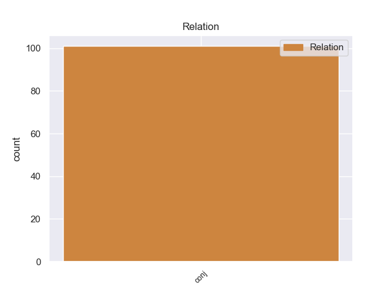
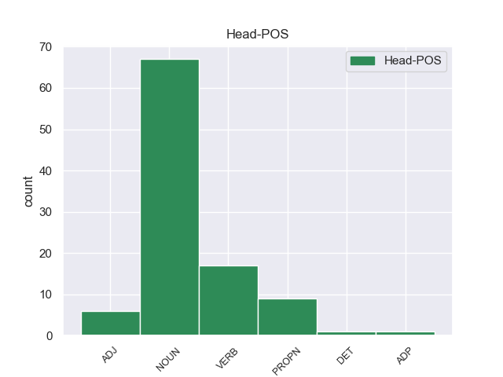

Distribution of features within this leaf



Agreement Rules sorted by frequency.
- When the dependent token is the conjunct(conj) of the head token, and the dependent token is NOUN.
1 Comienzan _ _ _ _ 0 _ _ _
2 serias _ _ _ _ 0 _ _ _
3 discusiones discusiones NOUN _ Gender=Masc|Number=Sing 0 _ _ _
4 con _ _ _ _ 0 _ _ _
5 Daniel _ _ _ _ 0 _ _ _
6 y _ _ _ _ 0 _ _ _
7 la _ _ _ _ 0 _ _ _
8 desgracia _ _ _ _ 0 _ _ _
9 no _ _ _ _ 0 _ _ _
10 se _ _ _ _ 0 _ _ _
11 hace _ _ _ _ 0 _ _ _
12 esperar _ _ _ _ 0 _ _ _
13 , _ _ _ _ 0 _ _ _
14 en _ _ _ _ 0 _ _ _
15 una _ _ _ _ 0 _ _ _
16 noche _ _ _ _ 0 _ _ _
17 Valeria _ _ _ _ 0 _ _ _
18 se _ _ _ _ 0 _ _ _
19 encierra _ _ _ _ 0 _ _ _
20 en _ _ _ _ 0 _ _ _
21 su _ _ _ _ 0 _ _ _
22 habitación _ _ _ _ 0 _ _ _
23 donde _ _ _ _ 0 _ _ _
24 Daniel _ _ _ _ 0 _ _ _
25 la _ _ _ _ 0 _ _ _
26 encuentra encuentra NOUN _ Gender=Masc|Number=Sing 3 conj _ _
27 inconsciente _ _ _ _ 0 _ _ _
28 por _ _ _ _ 0 _ _ _
29 lo _ _ _ _ 0 _ _ _
30 que _ _ _ _ 0 _ _ _
31 es _ _ _ _ 0 _ _ _
32 hospitalizada _ _ _ _ 0 _ _ _
33 de _ _ _ _ 0 _ _ _
34 nuevo _ _ _ _ 0 _ _ _
35 y _ _ _ _ 0 _ _ _
36 le _ _ _ _ 0 _ _ _
37 amputan _ _ _ _ 0 _ _ _
38 la _ _ _ _ 0 _ _ _
39 pierna _ _ _ _ 0 _ _ _
40 debido _ _ _ _ 0 _ _ _
41 a _ _ _ _ 0 _ _ _
42 que _ _ _ _ 0 _ _ _
43 se _ _ _ _ 0 _ _ _
44 le _ _ _ _ 0 _ _ _
45 desarrolló _ _ _ _ 0 _ _ _
46 una _ _ _ _ 0 _ _ _
47 gangrena _ _ _ _ 0 _ _ _
48 en _ _ _ _ 0 _ _ _
49 ella _ _ _ _ 0 _ _ _
50 , _ _ _ _ 0 _ _ _
51 tras _ _ _ _ 0 _ _ _
52 una _ _ _ _ 0 _ _ _
53 trombosis _ _ _ _ 0 _ _ _
54 generada _ _ _ _ 0 _ _ _
55 por _ _ _ _ 0 _ _ _
56 el _ _ _ _ 0 _ _ _
57 esfuerzo _ _ _ _ 0 _ _ _
58 de _ _ _ _ 0 _ _ _
59 Valeria _ _ _ _ 0 _ _ _
60 en _ _ _ _ 0 _ _ _
61 buscar _ _ _ _ 0 _ _ _
62 a _ _ _ _ 0 _ _ _
63 Richie _ _ _ _ 0 _ _ _
64 . _ _ _ _ 0 _ _ _
1 Comienzan _ _ _ _ 0 _ _ _
2 serias _ _ _ _ 0 _ _ _
3 discusiones discusiones NOUN _ Gender=Masc|Number=Sing 0 _ _ _
4 con _ _ _ _ 0 _ _ _
5 Daniel _ _ _ _ 0 _ _ _
6 y _ _ _ _ 0 _ _ _
7 la _ _ _ _ 0 _ _ _
8 desgracia _ _ _ _ 0 _ _ _
9 no _ _ _ _ 0 _ _ _
10 se _ _ _ _ 0 _ _ _
11 hace hace VERB _ Gender=Masc|Number=Sing 3 conj _ _
12 esperar _ _ _ _ 0 _ _ _
13 , _ _ _ _ 0 _ _ _
14 en _ _ _ _ 0 _ _ _
15 una _ _ _ _ 0 _ _ _
16 noche _ _ _ _ 0 _ _ _
17 Valeria _ _ _ _ 0 _ _ _
18 se _ _ _ _ 0 _ _ _
19 encierra _ _ _ _ 0 _ _ _
20 en _ _ _ _ 0 _ _ _
21 su _ _ _ _ 0 _ _ _
22 habitación _ _ _ _ 0 _ _ _
23 donde _ _ _ _ 0 _ _ _
24 Daniel _ _ _ _ 0 _ _ _
25 la _ _ _ _ 0 _ _ _
26 encuentra _ _ _ _ 0 _ _ _
27 inconsciente _ _ _ _ 0 _ _ _
28 por _ _ _ _ 0 _ _ _
29 lo _ _ _ _ 0 _ _ _
30 que _ _ _ _ 0 _ _ _
31 es _ _ _ _ 0 _ _ _
32 hospitalizada _ _ _ _ 0 _ _ _
33 de _ _ _ _ 0 _ _ _
34 nuevo _ _ _ _ 0 _ _ _
35 y _ _ _ _ 0 _ _ _
36 le _ _ _ _ 0 _ _ _
37 amputan _ _ _ _ 0 _ _ _
38 la _ _ _ _ 0 _ _ _
39 pierna _ _ _ _ 0 _ _ _
40 debido _ _ _ _ 0 _ _ _
41 a _ _ _ _ 0 _ _ _
42 que _ _ _ _ 0 _ _ _
43 se _ _ _ _ 0 _ _ _
44 le _ _ _ _ 0 _ _ _
45 desarrolló _ _ _ _ 0 _ _ _
46 una _ _ _ _ 0 _ _ _
47 gangrena _ _ _ _ 0 _ _ _
48 en _ _ _ _ 0 _ _ _
49 ella _ _ _ _ 0 _ _ _
50 , _ _ _ _ 0 _ _ _
51 tras _ _ _ _ 0 _ _ _
52 una _ _ _ _ 0 _ _ _
53 trombosis _ _ _ _ 0 _ _ _
54 generada _ _ _ _ 0 _ _ _
55 por _ _ _ _ 0 _ _ _
56 el _ _ _ _ 0 _ _ _
57 esfuerzo _ _ _ _ 0 _ _ _
58 de _ _ _ _ 0 _ _ _
59 Valeria _ _ _ _ 0 _ _ _
60 en _ _ _ _ 0 _ _ _
61 buscar _ _ _ _ 0 _ _ _
62 a _ _ _ _ 0 _ _ _
63 Richie _ _ _ _ 0 _ _ _
64 . _ _ _ _ 0 _ _ _
1 Uno _ _ _ _ 0 _ _ _
2 es _ _ _ _ 0 _ _ _
3 el _ _ _ _ 0 _ _ _
4 año _ _ _ _ 0 _ _ _
5 , _ _ _ _ 0 _ _ _
6 cuya _ _ _ _ 0 _ _ _
7 duración duración NOUN _ Gender=Masc|Number=Sing 0 _ _ _
8 de _ _ _ _ 0 _ _ _
9 aproximadamente _ _ _ _ 0 _ _ _
10 365 _ _ _ _ 0 _ _ _
11 días _ _ _ _ 0 _ _ _
12 , _ _ _ _ 0 _ _ _
13 viene _ _ _ _ 0 _ _ _
14 dada _ _ _ _ 0 _ _ _
15 por _ _ _ _ 0 _ _ _
16 la _ _ _ _ 0 _ _ _
17 astronomía _ _ _ _ 0 _ _ _
18 y _ _ _ _ 0 _ _ _
19 el _ _ _ _ 0 _ _ _
20 otro _ _ _ _ 0 _ _ _
21 , _ _ _ _ 0 _ _ _
22 más _ _ _ _ 0 _ _ _
23 breve _ _ _ _ 0 _ _ _
24 , _ _ _ _ 0 _ _ _
25 es _ _ _ _ 0 _ _ _
26 el _ _ _ _ 0 _ _ _
27 ciclo _ _ _ _ 0 _ _ _
28 de _ _ _ _ 0 _ _ _
29 siete _ _ _ _ 0 _ _ _
30 días _ _ _ _ 0 _ _ _
31 o _ _ _ _ 0 _ _ _
32 semana _ _ _ _ 0 _ _ _
33 , _ _ _ _ 0 _ _ _
34 en _ _ _ _ 0 _ _ _
35 cuya _ _ _ _ 0 _ _ _
36 duración duración PROPN _ Gender=Masc|Number=Sing 7 conj _ _
37 , _ _ _ _ 0 _ _ _
38 pese _ _ _ _ 0 _ _ _
39 a _ _ _ _ 0 _ _ _
40 ser _ _ _ _ 0 _ _ _
41 algo _ _ _ _ 0 _ _ _
42 bastante _ _ _ _ 0 _ _ _
43 más _ _ _ _ 0 _ _ _
44 arbitrario _ _ _ _ 0 _ _ _
45 están _ _ _ _ 0 _ _ _
46 de _ _ _ _ 0 _ _ _
47 acuerdo _ _ _ _ 0 _ _ _
48 las _ _ _ _ 0 _ _ _
49 culturas _ _ _ _ 0 _ _ _
50 más _ _ _ _ 0 _ _ _
51 relevantes _ _ _ _ 0 _ _ _
52 de _ _ _ _ 0 _ _ _
53 el _ _ _ _ 0 _ _ _
54 mundo _ _ _ _ 0 _ _ _
55 contemporáneo _ _ _ _ 0 _ _ _
56 . _ _ _ _ 0 _ _ _
1 El _ _ _ _ 0 _ _ _
2 HMS hms ADJ _ Gender=Masc|Number=Sing 6 conj _ _
3 Epervier _ _ _ _ 0 _ _ _
4 fue _ _ _ _ 0 _ _ _
5 una _ _ _ _ 0 _ _ _
6 balandra balandra NOUN _ Gender=Masc|Number=Sing 0 _ _ _
7 de _ _ _ _ 0 _ _ _
8 guerra _ _ _ _ 0 _ _ _
9 de _ _ _ _ 0 _ _ _
10 18 _ _ _ _ 0 _ _ _
11 cañones _ _ _ _ 0 _ _ _
12 que _ _ _ _ 0 _ _ _
13 sirvió _ _ _ _ 0 _ _ _
14 en _ _ _ _ 0 _ _ _
15 la _ _ _ _ 0 _ _ _
16 Royal _ _ _ _ 0 _ _ _
17 Navy _ _ _ _ 0 _ _ _
18 durante _ _ _ _ 0 _ _ _
19 la _ _ _ _ 0 _ _ _
20 Guerra _ _ _ _ 0 _ _ _
21 anglo _ _ _ _ 0 _ _ _
22 - _ _ _ _ 0 _ _ _
23 estadounidense _ _ _ _ 0 _ _ _
24 de _ _ _ _ 0 _ _ _
25 1812 _ _ _ _ 0 _ _ _
26 y _ _ _ _ 0 _ _ _
27 tras _ _ _ _ 0 _ _ _
28 ser _ _ _ _ 0 _ _ _
29 capturada _ _ _ _ 0 _ _ _
30 sirvió _ _ _ _ 0 _ _ _
31 en _ _ _ _ 0 _ _ _
32 la _ _ _ _ 0 _ _ _
33 Armada _ _ _ _ 0 _ _ _
34 de _ _ _ _ 0 _ _ _
35 los _ _ _ _ 0 _ _ _
36 Estados _ _ _ _ 0 _ _ _
37 Unidos _ _ _ _ 0 _ _ _
38 como _ _ _ _ 0 _ _ _
39 USS _ _ _ _ 0 _ _ _
40 Epervier _ _ _ _ 0 _ _ _
41 en _ _ _ _ 0 _ _ _
42 la _ _ _ _ 0 _ _ _
43 Segunda _ _ _ _ 0 _ _ _
44 Guerra _ _ _ _ 0 _ _ _
45 Berberisca _ _ _ _ 0 _ _ _
46 . _ _ _ _ 0 _ _ _
1 A _ _ _ _ 0 _ _ _
2 sus _ _ _ _ 0 _ _ _
3 37 _ _ _ _ 0 _ _ _
4 años _ _ _ _ 0 _ _ _
5 con _ _ _ _ 0 _ _ _
6 esta _ _ _ _ 0 _ _ _
7 victoria _ _ _ _ 0 _ _ _
8 pasó _ _ _ _ 0 _ _ _
9 a _ _ _ _ 0 _ _ _
10 encabezar _ _ _ _ 0 _ _ _
11 el _ _ _ _ 0 _ _ _
12 palmarés _ _ _ _ 0 _ _ _
13 de _ _ _ _ 0 _ _ _
14 la _ _ _ _ 0 _ _ _
15 prueba prueba PROPN _ Gender=Masc|Number=Sing 0 _ _ _
16 ( _ _ _ _ 0 _ _ _
17 con _ _ _ _ 0 _ _ _
18 tres _ _ _ _ 0 _ _ _
19 victorias _ _ _ _ 0 _ _ _
20 ) _ _ _ _ 0 _ _ _
21 junto _ _ _ _ 0 _ _ _
22 con _ _ _ _ 0 _ _ _
23 su _ _ _ _ 0 _ _ _
24 compatriota _ _ _ _ 0 _ _ _
25 Moreno _ _ _ _ 0 _ _ _
26 Argentin _ _ _ _ 0 _ _ _
27 y _ _ _ _ 0 _ _ _
28 con _ _ _ _ 0 _ _ _
29 los _ _ _ _ 0 _ _ _
30 belgas _ _ _ _ 0 _ _ _
31 Marcel _ _ _ _ 0 _ _ _
32 Kint _ _ _ _ 0 _ _ _
33 y _ _ _ _ 0 _ _ _
34 Eddy eddy ADP _ Gender=Masc|Number=Sing 15 conj _ _
35 Merckx _ _ _ _ 0 _ _ _
36 . _ _ _ _ 0 _ _ _
1 Plinio _ _ _ _ 0 _ _ _
2 el _ _ _ _ 0 _ _ _
3 Viejo _ _ _ _ 0 _ _ _
4 escribió _ _ _ _ 0 _ _ _
5 exhaustivamente _ _ _ _ 0 _ _ _
6 sobre _ _ _ _ 0 _ _ _
7 los _ _ _ _ 0 _ _ _
8 primeros _ _ _ _ 0 _ _ _
9 crus _ _ _ _ 0 _ _ _
10 de _ _ _ _ 0 _ _ _
11 Roma _ _ _ _ 0 _ _ _
12 , _ _ _ _ 0 _ _ _
13 destacando _ _ _ _ 0 _ _ _
14 el _ _ _ _ 0 _ _ _
15 falerno falerno NOUN _ Gender=Masc|Number=Sing 0 _ _ _
16 , _ _ _ _ 0 _ _ _
17 el _ _ _ _ 0 _ _ _
18 albano _ _ _ _ 0 _ _ _
19 y _ _ _ _ 0 _ _ _
20 el _ _ _ _ 0 _ _ _
21 cécube cécube X _ Gender=Masc|Number=Sing 15 conj _ SpaceAfter=No
22 . _ _ _ _ 0 _ _ _
1 A _ _ _ _ 0 _ _ _
2 pesar _ _ _ _ 0 _ _ _
3 de _ _ _ _ 0 _ _ _
4 todo _ _ _ _ 0 _ _ _
5 esto _ _ _ _ 0 _ _ _
6 , _ _ _ _ 0 _ _ _
7 las _ _ _ _ 0 _ _ _
8 primeras _ _ _ _ 0 _ _ _
9 películas _ _ _ _ 0 _ _ _
10 realmente _ _ _ _ 0 _ _ _
11 importantes _ _ _ _ 0 _ _ _
12 se _ _ _ _ 0 _ _ _
13 produjeron _ _ _ _ 0 _ _ _
14 a _ _ _ _ 0 _ _ _
15 partir _ _ _ _ 0 _ _ _
16 de _ _ _ _ 0 _ _ _
17 los _ _ _ _ 0 _ _ _
18 años _ _ _ _ 0 _ _ _
19 30 _ _ _ _ 0 _ _ _
20 , _ _ _ _ 0 _ _ _
21 con _ _ _ _ 0 _ _ _
22 la _ _ _ _ 0 _ _ _
23 aparición _ _ _ _ 0 _ _ _
24 de _ _ _ _ 0 _ _ _
25 las _ _ _ _ 0 _ _ _
26 ideas _ _ _ _ 0 _ _ _
27 comunistas _ _ _ _ 0 _ _ _
28 , _ _ _ _ 0 _ _ _
29 con _ _ _ _ 0 _ _ _
30 obras _ _ _ _ 0 _ _ _
31 como _ _ _ _ 0 _ _ _
32 Los _ _ _ _ 0 _ _ _
33 gusanos _ _ _ _ 0 _ _ _
34 de _ _ _ _ 0 _ _ _
35 seda _ _ _ _ 0 _ _ _
36 de _ _ _ _ 0 _ _ _
37 primavera _ _ _ _ 0 _ _ _
38 , _ _ _ _ 0 _ _ _
39 de _ _ _ _ 0 _ _ _
40 Cheng _ _ _ _ 0 _ _ _
41 Bugao _ _ _ _ 0 _ _ _
42 ( _ _ _ _ 0 _ _ _
43 Chūncán _ _ _ _ 0 _ _ _
44 , _ _ _ _ 0 _ _ _
45 1933 _ _ _ _ 0 _ _ _
46 ) _ _ _ _ 0 _ _ _
47 , _ _ _ _ 0 _ _ _
48 La _ _ _ _ 0 _ _ _
49 calle _ _ _ _ 0 _ _ _
50 mayor _ _ _ _ 0 _ _ _
51 ( _ _ _ _ 0 _ _ _
52 Dàlù _ _ _ _ 0 _ _ _
53 , _ _ _ _ 0 _ _ _
54 Sun _ _ _ _ 0 _ _ _
55 Yu _ _ _ _ 0 _ _ _
56 , _ _ _ _ 0 _ _ _
57 1935 _ _ _ _ 0 _ _ _
58 ) _ _ _ _ 0 _ _ _
59 , _ _ _ _ 0 _ _ _
60 o _ _ _ _ 0 _ _ _
61 La _ _ _ _ 0 _ _ _
62 diosa diosa NOUN _ Gender=Fem|Number=Sing 0 _ _ _
63 ( _ _ _ _ 0 _ _ _
64 Shénnǚ _ _ _ _ 0 _ _ _
65 , _ _ _ _ 0 _ _ _
66 Wu _ _ _ _ 0 _ _ _
67 Yonggang yonggang CCONJ _ Gender=Fem|Number=Sing 62 conj _ _
68 , _ _ _ _ 0 _ _ _
69 1934 _ _ _ _ 0 _ _ _
70 ) _ _ _ _ 0 _ _ _
71 . _ _ _ _ 0 _ _ _
Disagree Examples:
1 Los _ _ _ _ 0 _ _ _
2 puntos punto NOUN _ Gender=Masc|Number=Plur 0 _ _ _
3 de _ _ _ _ 0 _ _ _
4 vista _ _ _ _ 0 _ _ _
5 sobre _ _ _ _ 0 _ _ _
6 la _ _ _ _ 0 _ _ _
7 naturaleza _ _ _ _ 0 _ _ _
8 y _ _ _ _ 0 _ _ _
9 severidad severidad NOUN _ Gender=Fem|Number=Sing 2 conj _ _
10 de _ _ _ _ 0 _ _ _
11 los _ _ _ _ 0 _ _ _
12 problemas _ _ _ _ 0 _ _ _
13 con _ _ _ _ 0 _ _ _
14 el _ _ _ _ 0 _ _ _
15 consumo _ _ _ _ 0 _ _ _
16 a _ _ _ _ 0 _ _ _
17 largo _ _ _ _ 0 _ _ _
18 plazo _ _ _ _ 0 _ _ _
19 de _ _ _ _ 0 _ _ _
20 las _ _ _ _ 0 _ _ _
21 benzodiazepinas _ _ _ _ 0 _ _ _
22 varían _ _ _ _ 0 _ _ _
23 de _ _ _ _ 0 _ _ _
24 un _ _ _ _ 0 _ _ _
25 experto _ _ _ _ 0 _ _ _
26 a _ _ _ _ 0 _ _ _
27 otro _ _ _ _ 0 _ _ _
28 , _ _ _ _ 0 _ _ _
29 inclusive _ _ _ _ 0 _ _ _
30 de _ _ _ _ 0 _ _ _
31 un _ _ _ _ 0 _ _ _
32 país _ _ _ _ 0 _ _ _
33 a _ _ _ _ 0 _ _ _
34 otro _ _ _ _ 0 _ _ _
35 , _ _ _ _ 0 _ _ _
36 algunos _ _ _ _ 0 _ _ _
37 expertos _ _ _ _ 0 _ _ _
38 inclusive _ _ _ _ 0 _ _ _
39 cuestionan _ _ _ _ 0 _ _ _
40 si _ _ _ _ 0 _ _ _
41 realmente _ _ _ _ 0 _ _ _
42 hay _ _ _ _ 0 _ _ _
43 algún _ _ _ _ 0 _ _ _
44 problema _ _ _ _ 0 _ _ _
45 con _ _ _ _ 0 _ _ _
46 el _ _ _ _ 0 _ _ _
47 consumo _ _ _ _ 0 _ _ _
48 de _ _ _ _ 0 _ _ _
49 benzodiazepinas _ _ _ _ 0 _ _ _
50 a _ _ _ _ 0 _ _ _
51 largo _ _ _ _ 0 _ _ _
52 plazo _ _ _ _ 0 _ _ _
53 . _ _ _ _ 0 _ _ _
1 El _ _ _ _ 0 _ _ _
2 cantón _ _ _ _ 0 _ _ _
3 de _ _ _ _ 0 _ _ _
4 Saverdun _ _ _ _ 0 _ _ _
5 es _ _ _ _ 0 _ _ _
6 una _ _ _ _ 0 _ _ _
7 división _ _ _ _ 0 _ _ _
8 administrativa _ _ _ _ 0 _ _ _
9 francesa _ _ _ _ 0 _ _ _
10 , _ _ _ _ 0 _ _ _
11 situada _ _ _ _ 0 _ _ _
12 en _ _ _ _ 0 _ _ _
13 el _ _ _ _ 0 _ _ _
14 departamento departamento NOUN _ Gender=Masc|Number=Sing 0 _ _ _
15 de _ _ _ _ 0 _ _ _
16 Ariège _ _ _ _ 0 _ _ _
17 y _ _ _ _ 0 _ _ _
18 la _ _ _ _ 0 _ _ _
19 región región NOUN _ Gender=Fem|Number=Sing 14 conj _ _
20 de _ _ _ _ 0 _ _ _
21 Mediodía _ _ _ _ 0 _ _ _
22 - _ _ _ _ 0 _ _ _
23 Pirineos _ _ _ _ 0 _ _ _
24 . _ _ _ _ 0 _ _ _
1 La _ _ _ _ 0 _ _ _
2 suplencia _ _ _ _ 0 _ _ _
3 y _ _ _ _ 0 _ _ _
4 sustitución _ _ _ _ 0 _ _ _
5 no _ _ _ _ 0 _ _ _
6 permiten _ _ _ _ 0 _ _ _
7 ejercer _ _ _ _ 0 _ _ _
8 las _ _ _ _ 0 _ _ _
9 atribuciones _ _ _ _ 0 _ _ _
10 de _ _ _ _ 0 _ _ _
11 el _ _ _ _ 0 _ _ _
12 Presidente _ _ _ _ 0 _ _ _
13 o _ _ _ _ 0 _ _ _
14 Presidenta _ _ _ _ 0 _ _ _
15 relativas _ _ _ _ 0 _ _ _
16 a _ _ _ _ 0 _ _ _
17 el _ _ _ _ 0 _ _ _
18 planteamiento _ _ _ _ 0 _ _ _
19 de _ _ _ _ 0 _ _ _
20 una _ _ _ _ 0 _ _ _
21 cuestión _ _ _ _ 0 _ _ _
22 de _ _ _ _ 0 _ _ _
23 confianza _ _ _ _ 0 _ _ _
24 , _ _ _ _ 0 _ _ _
25 la _ _ _ _ 0 _ _ _
26 designación designación NOUN _ Gender=Fem|Number=Sing 0 _ _ _
27 y _ _ _ _ 0 _ _ _
28 el _ _ _ _ 0 _ _ _
29 cese cese NOUN _ Gender=Masc|Number=Sing 26 conj _ _
30 de _ _ _ _ 0 _ _ _
31 los _ _ _ _ 0 _ _ _
32 Consejeros _ _ _ _ 0 _ _ _
33 y _ _ _ _ 0 _ _ _
34 la _ _ _ _ 0 _ _ _
35 disolución _ _ _ _ 0 _ _ _
36 anticipada _ _ _ _ 0 _ _ _
37 de _ _ _ _ 0 _ _ _
38 el _ _ _ _ 0 _ _ _
39 Parlamento _ _ _ _ 0 _ _ _
40 . _ _ _ _ 0 _ _ _
1 Los _ _ _ _ 0 _ _ _
2 edificios _ _ _ _ 0 _ _ _
3 más _ _ _ _ 0 _ _ _
4 famosos _ _ _ _ 0 _ _ _
5 eran _ _ _ _ 0 _ _ _
6 la _ _ _ _ 0 _ _ _
7 tumba tumba NOUN _ Gender=Fem|Number=Sing 0 _ _ _
8 que _ _ _ _ 0 _ _ _
9 el _ _ _ _ 0 _ _ _
10 sátrapa _ _ _ _ 0 _ _ _
11 se _ _ _ _ 0 _ _ _
12 mandó _ _ _ _ 0 _ _ _
13 construir _ _ _ _ 0 _ _ _
14 cerca _ _ _ _ 0 _ _ _
15 de _ _ _ _ 0 _ _ _
16 el _ _ _ _ 0 _ _ _
17 mercado _ _ _ _ 0 _ _ _
18 , _ _ _ _ 0 _ _ _
19 conocida _ _ _ _ 0 _ _ _
20 como _ _ _ _ 0 _ _ _
21 Mausoleo _ _ _ _ 0 _ _ _
22 ( _ _ _ _ 0 _ _ _
23 que _ _ _ _ 0 _ _ _
24 fue _ _ _ _ 0 _ _ _
25 reconocida _ _ _ _ 0 _ _ _
26 como _ _ _ _ 0 _ _ _
27 una _ _ _ _ 0 _ _ _
28 de _ _ _ _ 0 _ _ _
29 las _ _ _ _ 0 _ _ _
30 Siete _ _ _ _ 0 _ _ _
31 Maravillas _ _ _ _ 0 _ _ _
32 de _ _ _ _ 0 _ _ _
33 el _ _ _ _ 0 _ _ _
34 Mundo _ _ _ _ 0 _ _ _
35 Antiguo _ _ _ _ 0 _ _ _
36 hasta _ _ _ _ 0 _ _ _
37 el _ _ _ _ 0 _ _ _
38 punto _ _ _ _ 0 _ _ _
39 de _ _ _ _ 0 _ _ _
40 que _ _ _ _ 0 _ _ _
41 este _ _ _ _ 0 _ _ _
42 término _ _ _ _ 0 _ _ _
43 se _ _ _ _ 0 _ _ _
44 usa _ _ _ _ 0 _ _ _
45 hoy _ _ _ _ 0 _ _ _
46 en _ _ _ _ 0 _ _ _
47 día _ _ _ _ 0 _ _ _
48 para _ _ _ _ 0 _ _ _
49 referir _ _ _ _ 0 _ _ _
50 se _ _ _ _ 0 _ _ _
51 a _ _ _ _ 0 _ _ _
52 grandes _ _ _ _ 0 _ _ _
53 tumbas _ _ _ _ 0 _ _ _
54 ) _ _ _ _ 0 _ _ _
55 y _ _ _ _ 0 _ _ _
56 el _ _ _ _ 0 _ _ _
57 majestuoso _ _ _ _ 0 _ _ _
58 Anfiteatro anfiteatro NOUN _ Gender=Masc|Number=Sing 7 conj _ _
59 de _ _ _ _ 0 _ _ _
60 Halicarnaso _ _ _ _ 0 _ _ _
61 . _ _ _ _ 0 _ _ _
1 Es _ _ _ _ 0 _ _ _
2 super _ _ _ _ 0 _ _ _
3 cómodo _ _ _ _ 0 _ _ _
4 y _ _ _ _ 0 _ _ _
5 tiene _ _ _ _ 0 _ _ _
6 los _ _ _ _ 0 _ _ _
7 mismos _ _ _ _ 0 _ _ _
8 precios precio NOUN _ Gender=Masc|Number=Plur 0 _ _ _
9 y _ _ _ _ 0 _ _ _
10 ofertas oferta NOUN _ Gender=Fem|Number=Plur 8 conj _ SpaceAfter=No
11 ! _ _ _ _ 0 _ _ _